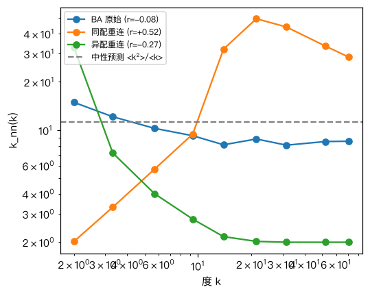
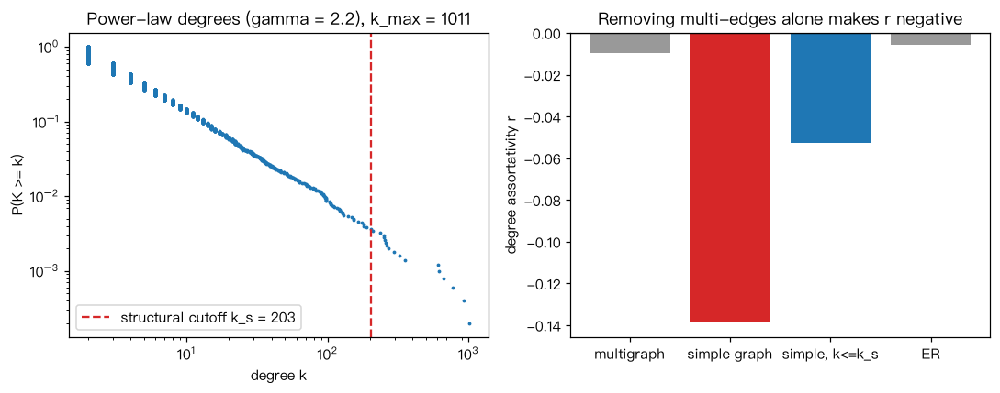
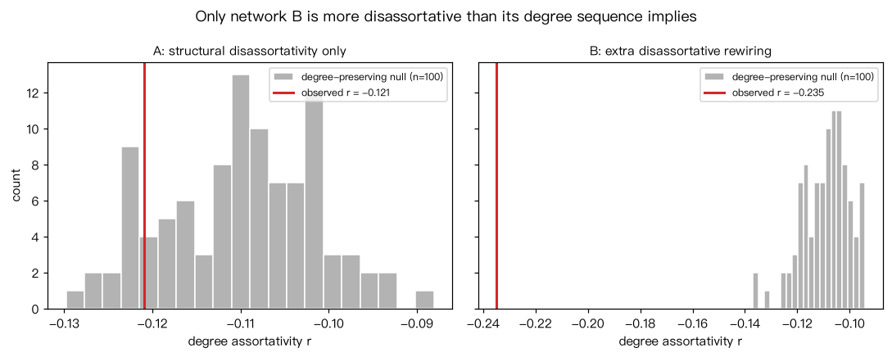

度相关性与网络结构的高阶统计
度分布之外，谁和谁相连：联合度分布、同配与异配、结构截断、富人俱乐部、聚集谱与 k-核，以及它们对传播、渗流、同步与控制的影响。
度分布 只告诉我们“每个节点有多少条边”，没有说明“这些边连向谁”。两张度序列完全相同的网络，可以一张让枢纽彼此相连，另一张让枢纽各自统领一群低度节点。区分这两种连接方式的统计量就是度相关性（degree correlations）：一条边两端节点的度是否相互依赖。枢纽倾向于连接枢纽的网络称为同配（assortative），枢纽倾向于连接低度节点的称为异配（disassortative），两者都不明显的称为中性（neutral）。
度相关是“度分布之后的下一层结构”。它最早由 Pastor-Satorras、Vázquez 与 Vespignani（2001, PRL）在互联网拓扑中通过邻居平均度函数 提出；Maslov 与 Sneppen（2002, Science）用保度随机化比较了酵母蛋白质相互作用网络与转录调控网络中枢纽之间的连接；Newman（2002, PRL；2003, PRE）引入了度相关系数 ，并系统比较了社会、技术和生物网络。一个反复出现的经验规律是：社会网络多为同配，蛋白质相互作用、代谢、神经元等生物网络多为异配。但后续工作也表明，生物网络的异配有相当一部分可以由重尾度分布和“简单图不允许重边”这一约束解释，这就是结构截断问题。
本专题从两点相关推进到更高阶的结构统计：
- 联合度分布与条件度分布：度相关的完整描述；
- 邻居平均度函数 与 度相关系数 ：两种压缩描述及其局限；
- 结构截断与结构性异配、度保持随机化检验：怎样判断观测到的相关是否超出了度序列本身的约束；
- 生成具有度相关的网络：模型与重连算法；
- 更高阶的统计：富人俱乐部、聚集谱与层次模块性、k-核分解；
- 度相关对网络过程的影响：渗流、鲁棒性、传播、同步与可控性。
它建立在网络结构指标与随机图（度、度分布、聚集系数）和小世界与无标度网络模型（配置模型、BA 模型）之上；零模型的一般原理见网络构建与统计验证。本专题的全部代码示例见代码示例。
Contents知识页面
VIDEO讲解视频
文字稿
先看这两张网络。节点的度，就是它的连接数。两张网络里，每个节点的度一模一样，所以度分布完全相同。 可是看看金色的枢纽，也就是连接最多的几个节点。左边的枢纽彼此相连，抱成一团；右边的枢纽互不相连，各自带着一群小节点。 所以，度分布只告诉我们每个节点有几条边，却没说这些边连向谁。 谁和谁相连的统计规律，就是度相关性。它会改变疾病怎样传播、网络怎样崩溃。 这一期分三部分来讲。 第一部分，边连向谁：怎样描述和度量度相关。 第二部分，观察到的度相关，有多少只是结构约束造成的。 第三部分，更高层的结构，富人俱乐部和核分解，以及度相关对网络过程的影响。 先看第一部分。我们先做个小实验：随机挑一个节点，记下它的度。 现在换一种挑法：随机挑一条边，再看它一端的节点。 中心这个节点有九条边，被抽中的机会就是九份；外面的小节点只有一条边，机会只有一份。所以沿着边找到的，往往是高度节点。 这就是友谊悖论：平均来说，你的朋友拥有的朋友，比你多。 在一张两千个节点的网络里，节点的平均度是四，而沿着边走到的邻居，平均度接近十二。 所以判断度相关，基线不是平均度，而是这个偏高的邻居平均度。 接下来，把度相同的节点放在一起，算出它们邻居的平均度。这张图横轴是节点的度，纵轴是邻居的平均度，两条轴都是对数刻度。 灰色曲线是平的：高度节点和低度节点的邻居差不多。这样的网络叫中性网络。 蓝色曲线往上走，说明枢纽连枢纽，叫同配。 绿色曲线往下走，说明枢纽连小节点，叫异配。 这三条曲线来自同一个度序列，只是边的连法不同。 还可以把它压缩成一个数。把每条边两端节点的度配成一对，画成左边的散点图：横轴是一端的度，纵轴是另一端的度。 这些点的相关系数，就叫度相关系数。正数是同配，负数是异配。开头那张异配网络，是负零点六五。 星形网络是最极端的异配：中心连的全是叶子，相关系数是负一。 真实网络里，物理学家合作网是正零点三六，演员合作网是正零点二一。社会网络多是同配的。 而酵母蛋白质相互作用网络是负零点一六，大肠杆菌代谢网络是负零点二四。生物网络多是异配的。 下面进入第二部分。生物网络的异配，是不是一定来自生物学，需要检验。 比如早期的酵母蛋白质网络，很多来自酵母双杂交实验：用一个蛋白作诱饵，去筛选和它结合的猎物蛋白。 先看一个纯粹由结构造成的效应。设想一个三百个节点、四百五十条边的网络，里面有两个枢纽，度分别是五十五和四十六。 如果完全随机配对，它们之间应该有大约二点八条边。 公式里，分子是两个枢纽的度相乘，分母是边数的两倍。 可在简单图里，两个节点之间最多只能有一条边。 多出来的边只好连到别处，大多连到低度节点上。网络就这样被迫变得异配，这叫结构性异配。 在一张五千个节点的模拟无标度网络里，允许重边时，相关系数接近零；合并成简单图，就变成了负零点一四。 所以要用保持度序列的随机网络作零模型，也就是作比较的参照：每次交换两条边的端点，每个节点的度不变，连法被打乱。 按这种检验，早期酵母蛋白质网络和代谢网络的异配，大部分能由度分布本身解释；社会网络的同配，却解释不了。 最后是第三部分。先看最顶层：度最高的那些节点之间，连得紧不紧。这叫富人俱乐部。 右边是富人俱乐部系数：分子是这些高度节点之间实际的边数，乘以二；分母是它们之间最多可能的边数。 麻烦在于，高度节点即使随机连边，彼此相连的机会也更大。所以必须除以保度随机网络的值。比值大于一，才算富人俱乐部。 结构脑网络，是用弥散磁共振追踪白质纤维，再把脑区连起来得到的网络。 2011年的一项研究，在二十一名健康人的结构脑网络中发现，楔前叶、额上回、丘脑、海马等脑区，组成了明显的富人俱乐部。 而在蛋白质相互作用网络里，这个比值低于一，高度蛋白之间的连接，反而少于随机预期。 另一种找核心的办法，叫核分解，像剥洋葱一样，一层一层地剥。 先删掉度为一的节点。删完以后，有的邻居度也变成了一，接着删，直到剩下的每个节点都至少有两条边。 再要求至少三条、四条、五条。每个节点最后留在哪一层，就是它的核数。右边的颜色，表示核数。 核数衡量的是，节点嵌在多稠密的子图里。你看圈出的这个节点，连着八条边，核数却只有一。 研究发现，从单个节点出发的传播能走多远，核数往往比度预测得更好；在酵母蛋白质网络里，越靠内层的核，必需蛋白的比例越高。 度相关还会改变网络上发生的过程。把开头那两张网络，都拿掉度最高的四个节点。 同配网络里，枢纽彼此冗余，最大的那一团还剩九成多；异配网络里，每个枢纽都带走一批只连着它的小节点，只剩七成多。 传播也一样：同配网络里，高度节点相互感染，形成病原体的储库，让疾病在整体稀疏时也能持续。 好，我们来总结一下。 第一，度分布之后，还要看边连向谁：同配还是异配，可以用邻居平均度或度相关系数来刻画。 第二，异配和富人俱乐部，都要和保持度序列的随机网络比较，排除结构本身的约束。 第三，度相关会改变网络的鲁棒性、传播和核心结构；解读之前，先确认网络是怎样构建的。
INTERACTIVE交互可视化
CODE计算实现
9 个完整可运行的 Python 示例，每个都给出代码、输出图和解读；可在浏览器中直接运行，或下载 Jupyter Notebook · Python 脚本 · 在 JupyterLite 中打开 ↗。
 按定义手算度相关系数 r 与 k_nn(k)，并与 NetworkX 对照
按定义手算度相关系数 r 与 k_nn(k)，并与 NetworkX 对照
k_nn(k)、相关指数 mu、r 与 Spearman rho——三类网络对照
结构截断与“伪异配”——简单图约束本身就会产生负的 r
度保持随机化检验——观测到的 r 是否超出度序列本身能解释的范围 富人俱乐部系数 phi(k) 及其保度归一化 rho(k)
富人俱乐部系数 phi(k) 及其保度归一化 rho(k) 聚集谱 C(k) 与层次模块网络（Ravasz–Barabási 型确定性模型）
聚集谱 C(k) 与层次模块网络（Ravasz–Barabási 型确定性模型） k-核分解——手写剥离算法并与 NetworkX 对照，比较核数与度
k-核分解——手写剥离算法并与 NetworkX 对照，比较核数与度 度相关如何改变巨连通分支、传播阈值与可同步性
度相关如何改变巨连通分支、传播阈值与可同步性 阈值化相关网络中的同配性——模块大小如何制造正的 r
阈值化相关网络中的同配性——模块大小如何制造正的 rPractice自测、练习与案例
References核心文献
度相关的定义与测量
- Pastor-Satorras R, Vázquez A, Vespignani A. Dynamical and correlation properties of the Internet. Physical Review Letters, 2001, 87: 258701. DOI: 10.1103/PhysRevLett.87.258701
- Vázquez A, Pastor-Satorras R, Vespignani A. Large-scale topological and dynamical properties of the Internet. Physical Review E, 2002, 65: 066130. DOI: 10.1103/PhysRevE.65.066130
- Newman MEJ. Assortative mixing in networks. Physical Review Letters, 2002, 89: 208701. DOI: 10.1103/PhysRevLett.89.208701
- Newman MEJ. Mixing patterns in networks. Physical Review E, 2003, 67: 026126. DOI: 10.1103/PhysRevE.67.026126
- Newman MEJ, Park J. Why social networks are different from other types of networks. Physical Review E, 2003, 68: 036122. DOI: 10.1103/PhysRevE.68.036122
- Foster JG, Foster DV, Grassberger P, Paczuski M. Edge direction and the structure of networks. PNAS, 2010, 107: 10815–10820. DOI: 10.1073/pnas.0912671107
- Litvak N, van der Hofstad R. Uncovering disassortativity in large scale-free networks. Physical Review E, 2013, 87: 022801. DOI: 10.1103/PhysRevE.87.022801
- Barrat A, Barthélemy M, Pastor-Satorras R, Vespignani A. The architecture of complex weighted networks. PNAS, 2004, 101: 3747–3752. DOI: 10.1073/pnas.0400087101
- Feld SL. Why your friends have more friends than you do. American Journal of Sociology, 1991, 96: 1464–1477. DOI: 10.1086/229693
结构截断、零模型与生成模型
- Maslov S, Sneppen K. Specificity and stability in topology of protein networks. Science, 2002, 296: 910–913. DOI: 10.1126/science.1065103
- Boguñá M, Pastor-Satorras R, Vespignani A. Cut-offs and finite size effects in scale-free networks. European Physical Journal B, 2004, 38: 205–209. DOI: 10.1140/epjb/e2004-00038-8
- Park J, Newman MEJ. Origin of degree correlations in the Internet and other networks. Physical Review E, 2003, 68: 026112. DOI: 10.1103/PhysRevE.68.026112
- Johnson S, Torres JJ, Marro J, Muñoz MA. Entropic origin of disassortativity in complex networks. Physical Review Letters, 2010, 104: 108702. DOI: 10.1103/PhysRevLett.104.108702
- Boguñá M, Pastor-Satorras R. Class of correlated random networks with hidden variables. Physical Review E, 2003, 68: 036112. DOI: 10.1103/PhysRevE.68.036112
- Barrat A, Pastor-Satorras R. Rate equation approach for correlations in growing network models. Physical Review E, 2005, 71: 036127. DOI: 10.1103/PhysRevE.71.036127
- Xulvi-Brunet R, Sokolov IM. Reshuffling scale-free networks: from random to assortative. Physical Review E, 2004, 70: 066102. DOI: 10.1103/PhysRevE.70.066102
- Mahadevan P, Krioukov D, Fall K, Vahdat A. Systematic topology analysis and generation using degree correlations. Proceedings of ACM SIGCOMM, 2006: 135–146. DOI: 10.1145/1159913.1159930
- Orsini C, Dankulov MM, Colomer-de-Simón P, et al. Quantifying randomness in real networks. Nature Communications, 2015, 6: 8627. DOI: 10.1038/ncomms9627
- Fosdick BK, Larremore DB, Nishimura J, Ugander J. Configuring random graph models with fixed degree sequences. SIAM Review, 2018, 60: 315–355. DOI: 10.1137/16M1087175
富人俱乐部、聚集谱与 k-核
- Zhou S, Mondragón RJ. The rich-club phenomenon in the Internet topology. IEEE Communications Letters, 2004, 8: 180–182. DOI: 10.1109/LCOMM.2004.823426
- Colizza V, Flammini A, Serrano MA, Vespignani A. Detecting rich-club ordering in complex networks. Nature Physics, 2006, 2: 110–115. DOI: 10.1038/nphys209
- Opsahl T, Colizza V, Panzarasa P, Ramasco JJ. Prominence and control: the weighted rich-club effect. Physical Review Letters, 2008, 101: 168702. DOI: 10.1103/PhysRevLett.101.168702
- Ravasz E, Somera AL, Mongru DA, Oltvai ZN, Barabási AL. Hierarchical organization of modularity in metabolic networks. Science, 2002, 297: 1551–1555. DOI: 10.1126/science.1073374
- Ravasz E, Barabási AL. Hierarchical organization in complex networks. Physical Review E, 2003, 67: 026112. DOI: 10.1103/PhysRevE.67.026112
- Soffer SN, Vázquez A. Network clustering coefficient without degree-correlation biases. Physical Review E, 2005, 71: 057101. DOI: 10.1103/PhysRevE.71.057101
- Seidman SB. Network structure and minimum degree. Social Networks, 1983, 5: 269–287. DOI: 10.1016/0378-8733(83)90028-X
- Batagelj V, Zaveršnik M. Fast algorithms for determining (generalized) core groups in social networks. Advances in Data Analysis and Classification, 2011, 5: 129–145. DOI: 10.1007/s11634-010-0079-y
- Dorogovtsev SN, Goltsev AV, Mendes JFF. k-core organization of complex networks. Physical Review Letters, 2006, 96: 040601. DOI: 10.1103/PhysRevLett.96.040601
- Kitsak M, Gallos LK, Havlin S, et al. Identification of influential spreaders in complex networks. Nature Physics, 2010, 6: 888–893. DOI: 10.1038/nphys1746
对网络过程的影响
- Boguñá M, Pastor-Satorras R. Epidemic spreading in correlated complex networks. Physical Review E, 2002, 66: 047104. DOI: 10.1103/PhysRevE.66.047104
- Boguñá M, Pastor-Satorras R, Vespignani A. Absence of epidemic threshold in scale-free networks with degree correlations. Physical Review Letters, 2003, 90: 028701. DOI: 10.1103/PhysRevLett.90.028701
- Vázquez A, Moreno Y. Resilience to damage of graphs with degree correlations. Physical Review E, 2003, 67: 015101. DOI: 10.1103/PhysRevE.67.015101
- di Bernardo M, Garofalo F, Sorrentino F. Effects of degree correlation on the synchronization of networks of oscillators. International Journal of Bifurcation and Chaos, 2007, 17: 3499–3506. DOI: 10.1142/S0218127407019263
- Pósfai M, Liu YY, Slotine JJ, Barabási AL. Effect of correlations on network controllability. Scientific Reports, 2013, 3: 1067. DOI: 10.1038/srep01067
生物医学应用
- Jeong H, Mason SP, Barabási AL, Oltvai ZN. Lethality and centrality in protein networks. Nature, 2001, 411: 41–42. DOI: 10.1038/35075138
- Han JDJ, Bertin N, Hao T, et al. Evidence for dynamically organized modularity in the yeast protein–protein interaction network. Nature, 2004, 430: 88–93. DOI: 10.1038/nature02555
- Wuchty S, Almaas E. Peeling the yeast protein network. Proteomics, 2005, 5: 444–449. DOI: 10.1002/pmic.200400962
- Piraveenan M, Prokopenko M, Zomaya A. Assortative mixing in directed biological networks. IEEE/ACM Transactions on Computational Biology and Bioinformatics, 2012, 9: 66–78. DOI: 10.1109/TCBB.2010.80
- Hagmann P, Cammoun L, Gigandet X, et al. Mapping the structural core of human cerebral cortex. PLoS Biology, 2008, 6: e159. DOI: 10.1371/journal.pbio.0060159
- van den Heuvel MP, Sporns O. Rich-club organization of the human connectome. Journal of Neuroscience, 2011, 31: 15775–15786. DOI: 10.1523/JNEUROSCI.3539-11.2011
- van den Heuvel MP, Kahn RS, Goñi J, Sporns O. High-cost, high-capacity backbone for global brain communication. PNAS, 2012, 109: 11372–11377. DOI: 10.1073/pnas.1203593109
- Harriger L, van den Heuvel MP, Sporns O. Rich club organization of macaque cerebral cortex and its role in network communication. PLoS ONE, 2012, 7: e46497. DOI: 10.1371/journal.pone.0046497
- Towlson EK, Vértes PE, Ahnert SE, Schafer WR, Bullmore ET. The rich club of the C. elegans neuronal connectome. Journal of Neuroscience, 2013, 33: 6380–6387. DOI: 10.1523/JNEUROSCI.3784-12.2013
- van den Heuvel MP, Sporns O, Collin G, et al. Abnormal rich club organization and functional brain dynamics in schizophrenia. JAMA Psychiatry, 2013, 70: 783. DOI: 10.1001/jamapsychiatry.2013.1328
Further延伸资源
| 类型 | 资源 | 说明 |
|---|---|---|
| 教材 | Barabási, Network Science, Ch. 7 Degree Correlations，networksciencebook.com/chapter/7（CC BY-NC-SA 2.0） | 、、相关指数、结构截断、R-S/R-M 随机化、Xulvi-Brunet–Sokolov 算法；进阶专题 7.A（ 与 的关系）与 7.B（结构截断推导） |
| 教材 | Newman, Networks（第 2 版, Oxford University Press, 2018），同配混合与度相关相关章节 | 类别与标量同配系数、相关网络上的渗流与传播的生成函数处理 |
| 综述 | Newman 2003, SIAM Review（精读见 Newman 2003） | 同配混合在复杂网络结构统计中的位置 |
| 工具 | NetworkX：degree_assortativity_coefficient、average_degree_connectivity、rich_club_coefficient、core_number、double_edge_swap、attribute_assortativity_coefficient |
本专题代码示例全部基于这些函数，并给出与定义的手算对照 |
| 工具 | Brain Connectivity Toolbox / bctpy | 加权与有向的同配系数、富人俱乐部系数（rich_club_bu、rich_club_wu
等）、核分解与多种零模型；指标说明见 Rubinov & Sporns（2010,
NeuroImage，DOI: 10.1016/j.neuroimage.2009.10.003） |
| 工具 | igraph（R / Python） | assortativity_degree、knn、coreness，适合大规模网络 |
| 数据 | BioGRID | 可按实验类型（双杂交、亲和纯化）筛选相互作用，比较不同证据类型对度相关的影响 |
Open questions开放问题
- 对你熟悉的一个生物网络，度相关有多少可以由度序列和简单图约束解释（R-S 随机化），多少需要额外的机制？如果再控制模块结构或空间距离，剩余的相关还存在吗？
- 相互作用组的研究偏倚使被研究得多的蛋白既度高又更可能互相有记录。你预期这种偏倚使观测的度相关偏向同配还是异配？可以用系统性筛选数据（如人类二元相互作用参考图谱）做什么样的对照？
- 富人俱乐部的归一化依赖零模型：保度、保持空间距离、保持权重分布的零模型可能给出不同结论。对一个具体的脑网络问题，你会预先规定哪一种，为什么？
- 两点相关（）、三点相关（）和更高阶统计（-核、dK 序列）之间是什么关系？在什么条件下，掌握到 2K 或 2.5K 就足以预测传播阈值或可控性，什么时候还需要更高阶的结构？
- 在患者与对照的网络比较中，如果患者组 或 不同，怎样区分“度相关结构改变”与“度分布、网络密度或模块大小改变”的间接效应？